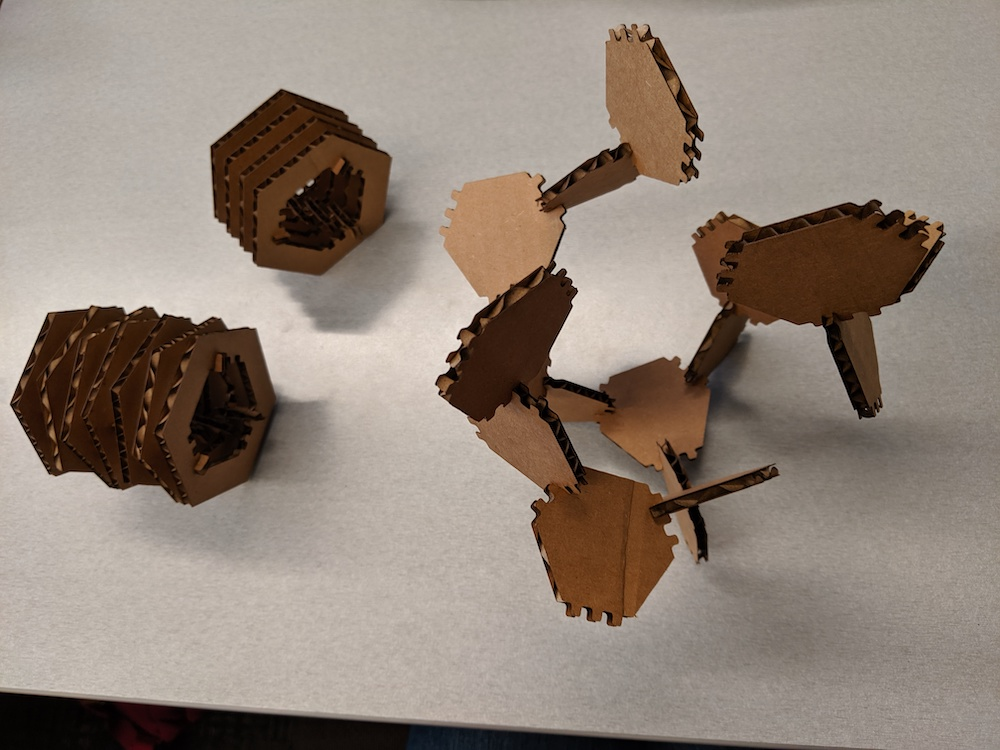

Problem Statement
This assignment was inspired by the Great Invention Kit originally conceived by George Popescu. It was designed to teach laser cutter skills and apply them to 3-D spaces. The problem statement was:
"Make a kit consisting of at least 12 instances of at least one unique part! The parts must have slots that press fit into the other parts in the kit! The parts must be laser cut out of cardboard! Your fit should be such that the parts do not come apart with a light shaking!">
Brainstorming
My goals for this assignment were to move outside of my comfort zone. I wanted to create a kit that would allow me to build a specific shape. This challenged me to place think about how the individual pieces of the kit would fit together. Each piece had to be constrained in order to form an elegant large shape. I came into this project with some previous laser cutting experience so I chose to focus on the overall design of the piece.
I began the project by searching for inspiration online. In the past, I have enjoyed modern geometric patterns and I found myself drawn to hexagons for this project. I originally thought about offset hexagons overlapping one another, connected by smaller pieces. After some sketching and recording a few other ideas, I arrived at the idea of a rotating tube of hexagons. The hexagons would be connected by smaller pieces located on the inner edges for a clean curve on the outside of the tube. Some of my brainstorming is shown below:
Experimentation
Once I knew what I wanted to create, I started designing. First I did some testing to learn about my materials and tools. Using my calipers, I found that my cardboard (sourced from an REI box that once held a backpack) measured 0.175in thick. In a new Illustrator file, I created two squares with three indents each, measuring 0.170, 0.175, and 0.180 inches wide. Using an Epliog Mini 24 laser cutter, I tried cutting these out using a few different power and speed combinations. The results of that test are shown below:
I determined that the optimal settings were 60 power and 40 speed. I used these settings for the remainder of the project. I also tried combining the different widths of indents and found that two 0.180 inch indents fit snugly together.
After figuring out the laser settings, I went back to Illustrator. I created a hexagon that would hold three equally spaced indents per side, giving me 20 degrees of rotation (360 degrees divided by 18 indents) if each hexagon in the tube were connected by adjacent indents. I created an outer hexagon measuring 3 inches across so that the connecting pieces would have plenty of space to overlap with the hexagons. Finally, I created a connecting piece that would allow for approximately 0.5 inches of space between hexagons, taking the 20 degree rotation into account.
Here are the links to the source files for my project: SVG Illustrator
{kind=link}
Finally, it was time to cut everything out. I cut out two test hexagons with square and rounded corners to see how they would fit together and whether the rounded corners would make for an easier fit. The hexagons fit together well and the rounded corners were easier to fit together. This test is pictured below (featuring my fancy REI cardboard):
Construction
I created 24 copies of the hexagon and 72 copies of the connector piece (3 per hexagon). Pictured below are the pieces fresh out of the laser cutter:
After cutting these out, I realized I got a bonus third piece out of my kit: the middle of the hexagon! As a result, I created two kits in one - the rotating tube as well as a bunch of tiny hexagons with protrusions.

The end result was a full kit of pieces just waiting to be made into a hexagon tube!
Finally, I got to build things with the kit! The cardboard had some really cool visual effects with the diagonal cuts for the hexagons. I had to push the press fit capabilities of the cardboard to its limits when creating the hexagon rotations. Had I put some of the indents at an angle, it would have been easier to fit together.
The kit was optimized for a non-rotated hexagon tube but both were ultimately possible :)
Future Work
I would like to experiment with turning the rotating tube into a circle. I did some sketching to this effect but did not have enough time to fully implement it.